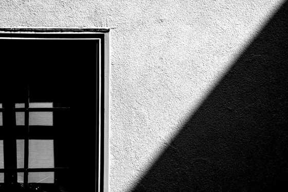

お店の由来・想い
実家の酒屋を、二年かけて、自分たちの手で。
紹介記事によると、カフェ・クロークは2025年1月17日に開店しました。店主の黒木敦子さんの実家だった築50年近い旧酒屋を、ご夫婦で約2年かけて改装した建物です。コーヒーはご主人が自家焙煎し、ホットサンドや手づくりのスイーツを出しています。
店名の「クローク」は「包む・まとう」という意味で、隠れ家のようなイメージから選ばれたとのことです。看板犬の「かぶ」くんが迎えてくれることもあり、犬連れでの来店もできます。
「10年愛されるお店になりたい」。世代の違う人たちが混ざり合う場所にしたい、という想いも語られています。隣には、レコードショップ「音虫レコード」があります。
情報源: 衆楽舎note「津山の新たな発信基地に。Café Cloakオープン!」 / Instagram
上記以外の言い回し・見出しは制作側の表現です。



メニュー
コーヒーと、ホットサンドと、甘いもの。
紹介記事では、自家焙煎のコーヒー、ホットサンド、手づくりスイーツが紹介されています。品目・価格・営業時間は変わることがあるため、ここでは「準備中」とし、最新情報はInstagramをご覧ください。
コーヒー
自家焙煎。品目・価格は準備中
ホットサンド
品目・価格は準備中
手づくりスイーツ
品目・価格は準備中


口コミ
こんなひとときになるかもしれません。
以下は制作側が作ったイメージ例です。実在のお客様の声ではありません。
イメージ例
古い建物のぬくもりが残っていて、入った瞬間に肩の力が抜けました。窓辺の席でコーヒーをゆっくりと。
イメージ例
ホットサンドをほおばりながら、本を一冊読み切ってしまいました。長居したくなる居心地です。
イメージ例
ワンちゃん連れでも気兼ねなく過ごせました。隣のレコード屋さんものぞいて、いい午後になりました。


アクセス
津山市小田中の、旧酒屋の建物へ。
| 所在地 | 〒708-0006 岡山県津山市小田中1311-8 |
|---|---|
| 電話 | 準備中 |
| 営業時間 | 準備中 |
| 定休日 | 準備中 |
| SNS | Instagram @cafe_cloak |
営業時間・定休日・駐車場などは変更されることがあるため、最新情報はInstagramでご確認ください。